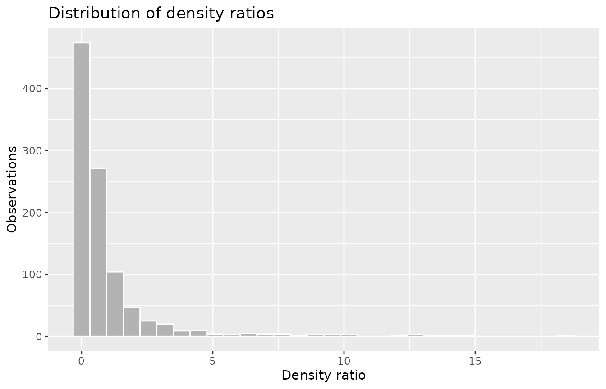
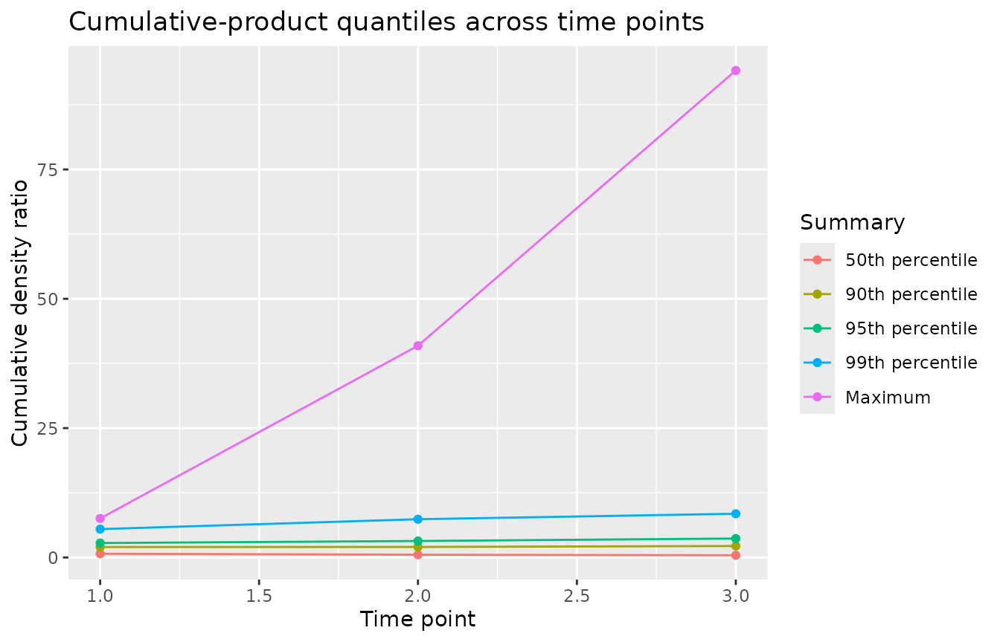
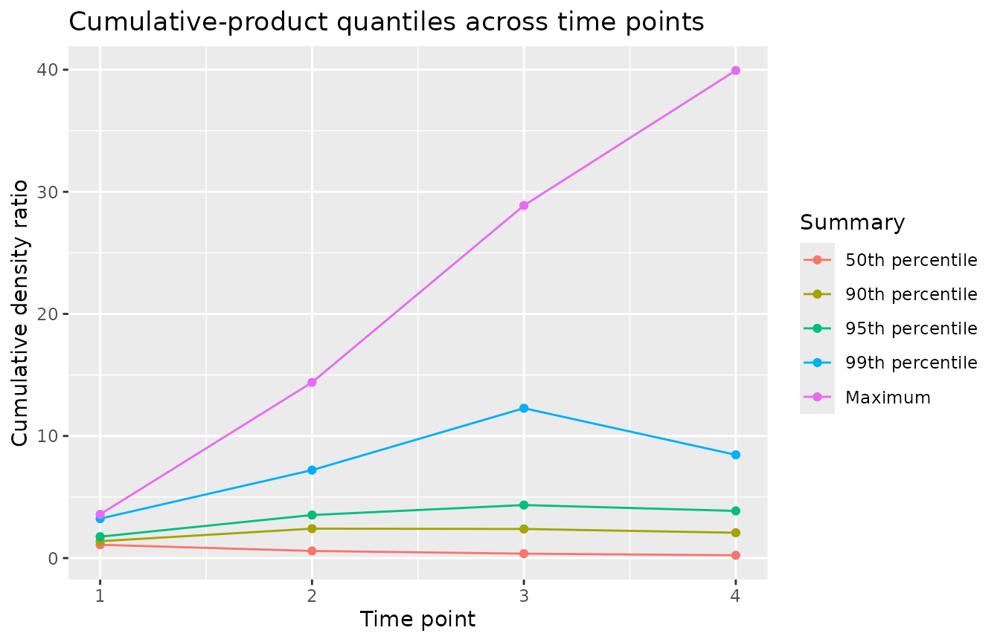

Density ratios and modified treatment policies
Source:vignettes/density-ratios.Rmd
density-ratios.RmdA modified treatment policy asks what would happen under an intervention that shifts each subject’s treatment as a function of their observed history, rather than setting everyone to a fixed level. Estimators for these policies reweight the observed data to the interventional world using a density ratio \(r = g^*(a \mid h) / g(a \mid h)\), the ratio of the intervention treatment law to the observed treatment law. The ratio is large wherever the observed conditional treatment density is small, which is where positivity is threatened. Reading the distribution of these ratios is therefore a positivity diagnostic for the policy.
check_density_ratios() summarizes user-supplied ratios.
It accepts a numeric vector for a point treatment, an n-by-T matrix
whose columns are time points for a time-varying treatment, and a fitted
lmtp object whose density-ratio component it reads. A
propensity::psw weight vector is also accepted.
What the summaries measure
Because a density ratio is a Radon-Nikodym derivative, its mean is one whenever the intervention law is absolutely continuous with respect to the observed law. The mean is a specification check rather than a violation detector: well-behaved weights on average do not guarantee positivity. The signal lives in the upper tail and in the Kish effective sample size \((\sum_i r_i)^2 / \sum_i r_i^2\), which equals the sample size when the ratios are equal and falls as a few large weights come to dominate. Petersen and colleagues (2012) recommend inspecting the weight distribution for exactly this reason: a near violation of positivity appears as a heavy upper tail, while an observed density close to zero for some treatment level produces ratios that are large or exactly zero.
A hand-built point-treatment example
To see the summaries against known behavior, construct two sets of ratios by hand. The first is well-behaved: values scattered close to one. The second has a heavy right tail. Both are rescaled to mean one so that the only difference between them is the shape of the distribution. The seed is set so the example is reproducible.
set.seed(20260706)
well_behaved <- rlnorm(1000, meanlog = 0, sdlog = 0.3)
well_behaved <- well_behaved / mean(well_behaved)
heavy_tail <- rlnorm(1000, meanlog = 0, sdlog = 1.4)
heavy_tail <- heavy_tail / mean(heavy_tail)Passing the well-behaved ratios prints a compact numeric summary: the number of ratios and time points, the mean, the median and the upper quantiles, the maximum, the proportion of ratios above each threshold, the proportion that are exactly zero, and the Kish effective sample size as a fraction of the sample size.
check_density_ratios(well_behaved)
#>
#> ── Density ratios ──────────────────────────────────────────────────────────────
#> Density ratios: 1000 observations across 1 time point
#> Mean ratio: 1
#> 50th percentile: 0.956
#> 90th percentile: 1.4
#> 95th percentile: 1.594
#> 99th percentile: 1.92
#> Maximum: 2.426
#> Proportion > 10: 0
#> Proportion > 50: 0
#> Proportion exactly zero: 0
#> Kish ESS fraction: 0.915The mean is one, as construction guarantees. The quantiles sit close together, the maximum is a small multiple of the median, and the effective sample size retains most of the 1000 observations. These weights carry no positivity warning.
The heavy-tailed ratios have the same mean and the same sample size, but the distribution is different.
heavy_ratios <- check_density_ratios(heavy_tail)
heavy_ratios
#>
#> ── Density ratios ──────────────────────────────────────────────────────────────
#> Density ratios: 1000 observations across 1 time point
#> Mean ratio: 1
#> 50th percentile: 0.358
#> 90th percentile: 2.342
#> 95th percentile: 4.085
#> 99th percentile: 10.189
#> Maximum: 18.455
#> Proportion > 10: 0.011
#> Proportion > 50: 0
#> Proportion exactly zero: 0
#> Kish ESS fraction: 0.216The upper quantiles climb steeply, a small fraction of ratios exceed ten, and the effective sample size fraction falls to roughly a fifth of the observations. The estimate for this policy rests on a much smaller effective sample than the raw count suggests, and it is sensitive to the handful of subjects carrying the largest weights.
The autoplot() method draws the distribution of the raw
ratios. The long right tail is the visual counterpart of the collapsed
effective sample size.
autoplot(heavy_ratios, type = "distribution")
A mean below one signals leaked support
A mean visibly below one is informative in its own right. It marks a structural violation in which intervention probability mass falls outside the observed support, so some ratios are exactly zero. The following ratios are rescaled to mean one and then have a block of values set to zero, mimicking subjects for whom the shifted treatment is never observed.
set.seed(1)
degenerate <- rlnorm(500, meanlog = 0, sdlog = 0.5)
degenerate <- degenerate / mean(degenerate)
degenerate[sample(500, 40)] <- 0
check_density_ratios(degenerate)
#>
#> ── Density ratios ──────────────────────────────────────────────────────────────
#> Density ratios: 500 observations across 1 time point
#> Mean ratio: 0.924
#> 50th percentile: 0.822
#> 90th percentile: 1.672
#> 95th percentile: 2.015
#> 99th percentile: 2.815
#> Maximum: 5.839
#> Proportion > 10: 0
#> Proportion > 50: 0
#> Proportion exactly zero: 0.08
#> Kish ESS fraction: 0.698The mean now prints below one. The proportion of exact-zero ratios is
reported as the prop_zero statistic, which the long summary
from tidy() exposes directly.
tidy(check_density_ratios(degenerate)) |>
dplyr::filter(statistic == "prop_zero")
#> # A tibble: 1 × 3
#> time statistic value
#> <int> <chr> <dbl>
#> 1 1 prop_zero 0.08Time-varying treatments and cumulative products
For a time-varying treatment, supply one column per time point. The diagnostic summarizes the per-time ratios and also their cumulative product across time points, which is the density ratio of the whole treatment history. Mild per-step non-overlap compounds multiplicatively, so the cumulative effective sample size can fall even while each per-time fraction stays healthy.
set.seed(20260706)
per_time <- replicate(3, {
ratios <- rlnorm(800, meanlog = 0, sdlog = 0.8)
ratios / mean(ratios)
})
longitudinal <- check_density_ratios(per_time)
longitudinal
#>
#> ── Density ratios ──────────────────────────────────────────────────────────────
#> Density ratios: 800 observations across 3 time points
#> Summaries shown for time point 3
#> Mean ratio: 1
#> 50th percentile: 0.76
#> 90th percentile: 1.967
#> 95th percentile: 2.545
#> 99th percentile: 4.62
#> Maximum: 7.043
#> Proportion > 10: 0
#> Proportion > 50: 0
#> Proportion exactly zero: 0
#> Kish ESS fraction: 0.565
#> Cumulative ESS fraction: 0.072The printed per-time effective sample size fraction is moderate, but
the cumulative fraction is far lower: the three per-step distributions
multiply into a history weight with a much heavier tail.
glance() returns the headline cumulative statistics in one
row.
glance(longitudinal)
#> # A tibble: 1 × 6
#> n n_times mean max prop_zero ess_fraction
#> <int> <int> <dbl> <dbl> <dbl> <dbl>
#> 1 800 3 1.11 94.1 0 0.0723The type = "cumulative" plot shows the
cumulative-product quantiles across time points. The gap between the
upper quantiles and the median widens with each step, which is the
sequential positivity signature.
autoplot(longitudinal, type = "cumulative")
A fitted longitudinal policy with lmtp
In practice the ratios come from a fitted model. The lmtp package estimates modified treatment policy effects and stores the estimated density ratios in the fitted object. The chunk below is gated on lmtp being installed, so the vignette builds either way.
The model fits a shift intervention that lowers each time-varying
treatment by one unit, on the sim_t4 example data. The
settings are chosen for a fast demonstration: a subset of the rows, two
cross-fitting folds, and a single generalized linear learner. A serious
analysis would use more folds and a richer learner library.
library(lmtp)
set.seed(20260706)
demo_data <- head(sim_t4, 300)
treatments <- c("A_1", "A_2", "A_3", "A_4")
covariates <- list("L_1", "L_2", "L_3", "L_4")
shift_down <- function(data, trt) pmax(data[[trt]] - 1, 0)
fit <- lmtp_sdr(
demo_data,
trt = treatments,
outcome = "Y",
time_vary = covariates,
shift = shift_down,
outcome_type = "binomial",
folds = 2,
learners_trt = "SL.glm",
learners_outcome = "SL.glm"
)
#> Loading required package: nnls
check_density_ratios(fit)
#>
#> ── Density ratios ──────────────────────────────────────────────────────────────
#> Density ratios: 300 observations across 4 time points
#> Summaries shown for time point 4
#> Mean ratio: 1.037
#> 50th percentile: 0.623
#> 90th percentile: 2.381
#> 95th percentile: 3.098
#> 99th percentile: 5.976
#> Maximum: 9.655
#> Proportion > 10: 0
#> Proportion > 50: 0
#> Proportion exactly zero: 0
#> Kish ESS fraction: 0.422
#> Cumulative ESS fraction: 0.1Passing the fit reads its density-ratio component and produces the same summaries as a hand-built matrix. The per-time effective sample size fraction describes the overlap at the final time point, while the cumulative fraction describes the overlap for the full four-step history. A large gap between them points to sequential positivity strain that no single time point reveals.
autoplot(check_density_ratios(fit), type = "cumulative")
Inverse-probability weights from a propensity model
Inverse-probability weights for a binary treatment are also density
ratios: they reweight each treatment arm toward a target population.
check_density_ratios() accepts a
propensity::psw vector, so weights from a fitted propensity
model can be inspected with the same summaries. The example uses the
nhefs_weights data from the halfmoon package, gated on that
package being installed.
library(halfmoon)
check_density_ratios(nhefs_weights$w_ate)
#>
#> ── Density ratios ──────────────────────────────────────────────────────────────
#> Density ratios: 1566 observations across 1 time point
#> Mean ratio: 1.996
#> 50th percentile: 1.373
#> 90th percentile: 3.987
#> 95th percentile: 4.959
#> 99th percentile: 7.41
#> Maximum: 16.7
#> Proportion > 10: 0.0026
#> Proportion > 50: 0
#> Proportion exactly zero: 0
#> Kish ESS fraction: 0.647Average treatment effect weights use a different normalization from a mean-one modified treatment policy ratio, so their mean is near two rather than one. The informative quantities are the same as before: the upper tail and the Kish effective sample size fraction, which report how concentrated the weights are and how much of the sample they leave effective.
Where to go next
The Getting started with positively vignette introduces
check_positivity() and the diagnostics it composes for
point treatments. check_positivity() does not compose
check_density_ratios(), because the ratios have to be
supplied by you rather than computed from the data, but
check_density_ratios() reads and plots through the same
tidy(), glance(), and autoplot()
interface as every other diagnostic in the package.
References
Petersen ML, Porter KE, Gruber S, Wang Y, van der Laan MJ (2012). Diagnosing and responding to violations in the positivity assumption. Statistical Methods in Medical Research, 21(1):31-54. doi:10.1177/0962280210386207
Ring C, Schomaker M (2026). A Diagnostic to Find and Help Combat Stochastic Positivity Issues, with a Focus on Continuous Treatments.